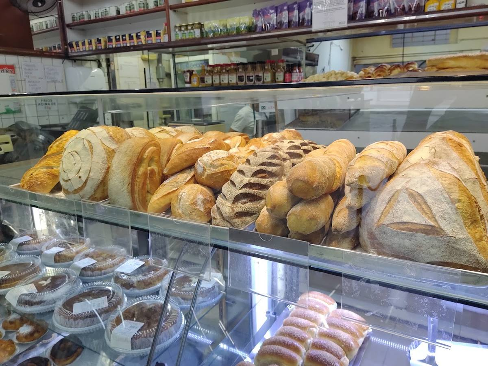
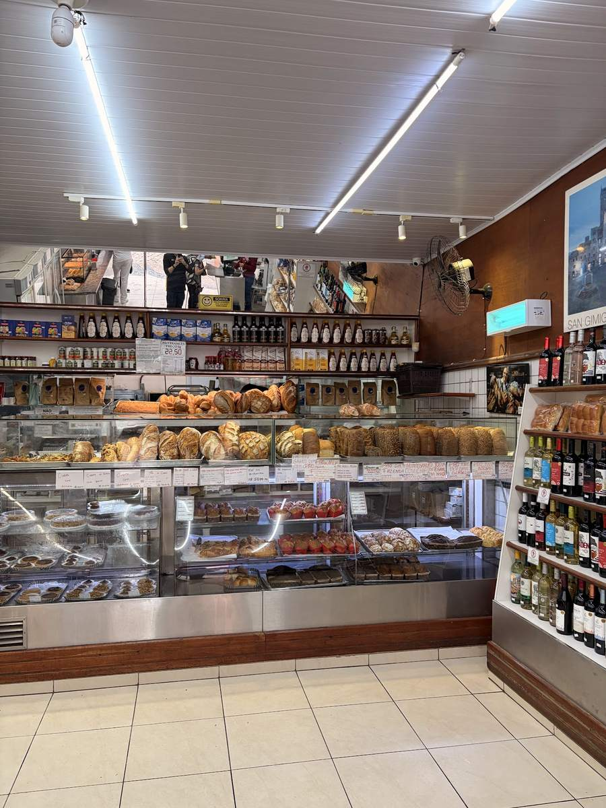

O pão que tem fila de manhã no Cambuí.
Pão italiano, integral, francês e massa de pizza feitos ali mesmo, na Rua Maria Monteiro. E ainda salgados, bolos, o brownie que todo mundo comenta e café passado no capricho.
Seg a sáb 6h às 21h · dom e feriado 7h às 21h

Os pães da casa
Os mais citados por quem compra. Quer saber o que está saindo agora? Pergunte no WhatsApp.
Pão italiano
Casca crocante e miolo macio. "O melhor pão italiano da região", segundo os clientes.
Pão de Altamura
Feito com trigo durum, numa receita que vem do século XVI.
Pão integral
Um dos que mais aparece nas avaliações.
Pão francês
"O melhor pão de sal que como em Campinas", disse um cliente.
Massa de pizza
Para levar e montar a pizza em casa.
Brownie
O doce mais comentado da casa, ao lado dos bolos.

Separe o seu pão
Escolha o que quer, diga o horário e mande pelo WhatsApp. A equipe confirma e deixa separado.
Patrimônio do Cambuí
Padaria italiana em Campinas. Melhor pão italiano da região.Resumo das avaliações · Google
O melhor pão de sal que como de Campinas! Gosto muito do ambiente.Leonardo · Google
Experimentamos as empadas e elas estavam simplesmente deliciosas. Dá para perceber o cuidado no preparo.Ana Clara · Google
Rua Maria Monteiro, 1334
| Segunda | 6h às 21h |
| Terça | 6h às 21h |
| Quarta | 6h às 21h |
| Quinta | 6h às 21h |
| Sexta | 6h às 21h |
| Sábado | 6h às 21h |
| Domingo e feriado | 7h às 21h |
R. Maria Monteiro, 1334 · Cambuí, Campinas (SP)
WhatsApp (19) 99897-1693